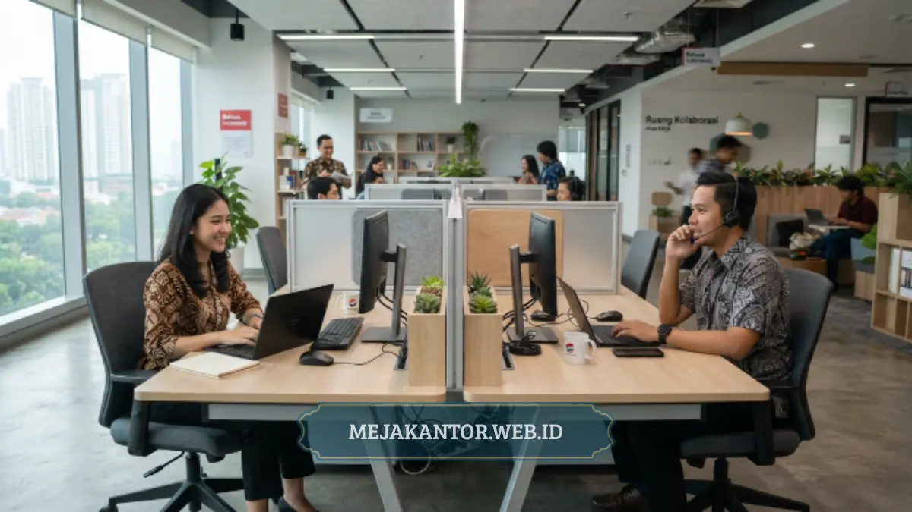

Harga partisi workstation kantor pada 2026 bervariasi tergantung model, material, dan ukuran, dengan dua model paling umum digunakan yaitu L-Shape dan Face-to-Face untuk kebutuhan ruang kerja tim.
- Model L-Shape cocok untuk workstation individu yang membutuhkan privasi lebih pada dua sisi meja.
- Model Face-to-Face cocok untuk ruang kerja tim yang duduk berhadapan dalam satu baris meja.
- Harga partisi dipengaruhi oleh material sekat, tinggi partisi, dan jumlah unit workstation yang dipesan.
- Partisi berbahan kombinasi kaca dan panel lebih mahal dibanding partisi panel penuh.
- Estimasi harga sebaiknya dikonfirmasi langsung ke vendor karena dapat berubah sewaktu-waktu.
Kebutuhan partisi workstation kantor terus meningkat seiring banyaknya perusahaan yang menata ulang ruang kerja pasca perubahan pola kerja hibrida.
Partisi tidak hanya berfungsi sebagai pembatas visual antarkaryawan, tetapi juga membantu mengurangi distraksi suara dan menciptakan batas area kerja yang lebih jelas dalam satu ruangan terbuka.
Artikel ini membahas kisaran harga, perbedaan model L-Shape dan Face-to-Face, serta faktor yang memengaruhi harga partisi workstation kantor terbaru.
Daftar Isi Artikel
- Apa Itu Partisi Workstation Kantor?
- Berapa Kisaran Harga Partisi Workstation Kantor Model L-Shape?
- Berapa Kisaran Harga Partisi Workstation Kantor Model Face-to-Face?
- Apa Perbedaan Utama Partisi L-Shape dan Face-to-Face?
- Faktor Apa yang Memengaruhi Harga Partisi Workstation Kantor?
- Apa Tips Memilih Partisi Workstation Sesuai Kebutuhan Kantor?
Apa Itu Partisi Workstation Kantor?
Partisi workstation kantor adalah sekat pembatas yang dipasang pada meja kerja untuk memberi batas visual dan privasi antarkaryawan dalam satu area kerja terbuka.
Partisi ini umumnya terbuat dari material panel seperti particle board berlapis HPL, kombinasi kaca dan aluminium, atau bahan akustik peredam suara.
Fungsi utamanya adalah membantu karyawan tetap fokus bekerja tanpa sepenuhnya terisolasi dari rekan kerja di sekitarnya, berbeda dengan ruang kerja tertutup berbentuk kubikel penuh yang cenderung membatasi interaksi antartim.
Selain fungsi privasi, partisi workstation juga membantu menata kabel perangkat elektronik, karena sebagian model dilengkapi jalur kabel tersembunyi pada bagian bawah atau belakang sekat.
Berapa Kisaran Harga Partisi Workstation Kantor Model L-Shape?
Partisi model L-Shape umumnya dipasang pada dua sisi meja staff berbentuk L, dengan kisaran harga yang dipengaruhi oleh tinggi sekat, material panel, dan finishing yang dipilih.
Model L-Shape memberi privasi lebih besar dibanding model Face-to-Face karena sekat menutupi dua sisi area kerja sekaligus, yaitu sisi depan dan sisi samping meja.
Pendekatan ini cocok untuk workstation individu yang membutuhkan fokus kerja tinggi, seperti posisi customer service, staf keuangan, atau tim yang menangani data sensitif.
Harga partisi L-Shape biasanya sedikit lebih tinggi dibanding model Face-to-Face untuk ukuran meja yang setara, karena jumlah material panel yang dibutuhkan juga lebih banyak akibat menutupi dua sisi meja sekaligus.

Berapa Kisaran Harga Partisi Workstation Kantor Model Face-to-Face?
Partisi model Face-to-Face dipasang di tengah dua meja yang saling berhadapan, dengan harga yang umumnya dipengaruhi oleh panjang sekat, tinggi partisi, dan jumlah pasangan meja dalam satu baris workstation.
Model ini lebih efisien dari sisi kebutuhan material dibanding L-Shape, karena satu unit sekat dapat digunakan bersama oleh dua karyawan yang duduk berhadapan.
Face-to-Face cocok untuk ruang kerja tim yang tetap membutuhkan kolaborasi cepat antarkaryawan, namun tetap ingin menjaga batas visual agar tidak saling terganggu saat bekerja dengan layar monitor masing-masing.
Dari sisi efisiensi anggaran, model Face-to-Face umumnya menjadi pilihan lebih hemat untuk pengadaan workstation dalam jumlah besar, karena kebutuhan panel per unit meja lebih sedikit dibanding model L-Shape.
Apa Perbedaan Utama Partisi L-Shape dan Face-to-Face?
Perbedaan utama partisi L-Shape dan Face-to-Face terletak pada cakupan sisi meja yang tertutup sekat, di mana L-Shape menutupi dua sisi meja individu, sedangkan Face-to-Face hanya menutupi sisi tengah antara dua meja yang berhadapan.
Dari sisi privasi, L-Shape unggul karena memberi batas visual lebih menyeluruh pada satu unit meja.
Namun dari sisi efisiensi ruang dan anggaran, Face-to-Face lebih unggul karena satu sekat dapat digunakan bersama oleh dua karyawan sekaligus.
Pemilihan model idealnya disesuaikan dengan jenis pekerjaan tim, di mana posisi yang membutuhkan konsentrasi tinggi dan minim interupsi lebih cocok menggunakan L-Shape, sementara posisi yang membutuhkan komunikasi tim secara berkala lebih cocok menggunakan Face-to-Face.
Faktor Apa yang Memengaruhi Harga Partisi Workstation Kantor?
Harga partisi workstation kantor dipengaruhi oleh beberapa faktor utama, yaitu jenis material panel, tinggi sekat, tambahan elemen seperti kaca atau bahan akustik, serta jumlah unit yang dipesan dalam satu proyek pengadaan.
Material panel standar berbahan particle board berlapis HPL umumnya menjadi opsi paling terjangkau dibanding kombinasi kaca dan aluminium yang memberi tampilan lebih modern namun dengan biaya produksi lebih tinggi.
Tinggi sekat turut memengaruhi harga, karena partisi yang lebih tinggi membutuhkan material dan rangka penopang tambahan agar tetap stabil.
Selain itu, pemesanan dalam jumlah besar untuk satu proyek renovasi kantor biasanya memungkinkan negosiasi harga per unit yang lebih kompetitif dibanding pembelian satuan.
Faktor tambahan lain yang memengaruhi harga adalah kebutuhan kustomisasi, seperti penambahan jalur kabel tersembunyi, laci tambahan pada sisi partisi, atau pemilihan warna khusus sesuai identitas visual perusahaan.
Apa Tips Memilih Partisi Workstation Sesuai Kebutuhan Kantor?
Tips memilih partisi workstation kantor meliputi menyesuaikan model dengan jenis pekerjaan tim, mempertimbangkan anggaran secara menyeluruh, serta memastikan partisi kompatibel dengan meja staff yang sudah atau akan digunakan.
Perusahaan sebaiknya terlebih dahulu memetakan kebutuhan tiap divisi, karena tidak semua area kerja membutuhkan tingkat privasi yang sama.
Divisi dengan pekerjaan individual dan fokus tinggi dapat diprioritaskan menggunakan partisi L-Shape, sementara divisi dengan kebutuhan kolaborasi tinggi dapat menggunakan model Face-to-Face agar komunikasi antartim tetap berjalan lancar.
Kompatibilitas partisi dengan meja staff yang digunakan juga penting diperhatikan, terutama jika perusahaan sudah memiliki meja staff eksisting seperti tipe L-Shape, agar sekat dapat terpasang dengan presisi tanpa memerlukan penyesuaian tambahan yang meningkatkan biaya pemasangan.
Pemilihan partisi workstation kantor antara model L-Shape dan Face-to-Face sebaiknya disesuaikan dengan kebutuhan privasi dan pola kolaborasi tiap divisi, bukan semata berdasarkan harga terendah.
L-Shape lebih unggul dari sisi privasi individual, sementara Face-to-Face lebih efisien dari sisi anggaran untuk pengadaan workstation dalam jumlah besar. Harga pasti sebaiknya selalu dikonfirmasi langsung ke vendor karena dapat berubah sesuai spesifikasi material dan kebijakan produksi terbaru.
Untuk pertimbangan furnitur pendukung lain, dapat dilihat pada review meja staff L-Shape MSO-140L maupun ide desain meja rapat minimalis untuk ruang meeting.

Mega Anggun (Ega)
Penulis Konten & Spesialis Penataan Interior Kantor. Berpengalaman dalam memberikan tips ergonomi dan memilih furnitur terbaik untuk menunjang produktivitas kerja.